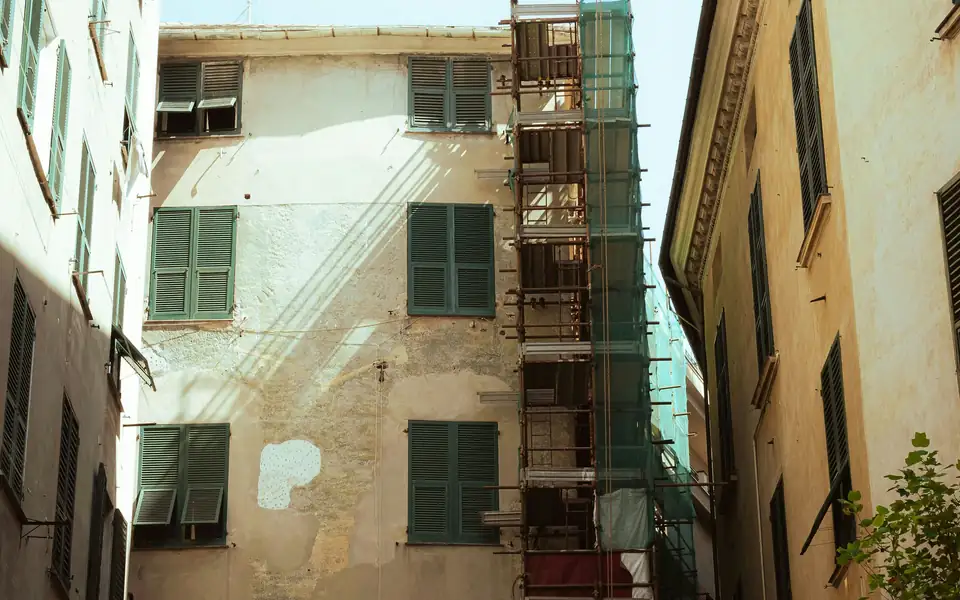
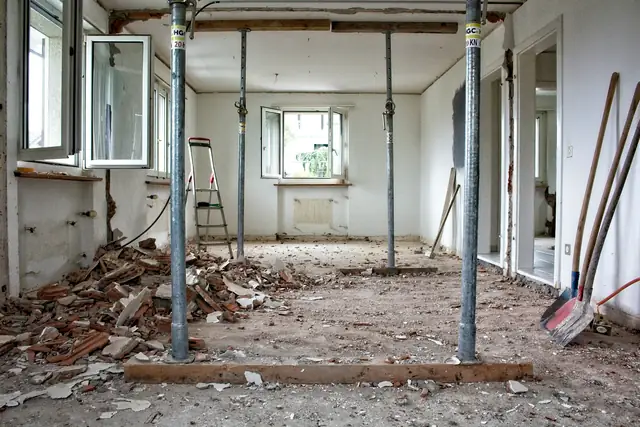
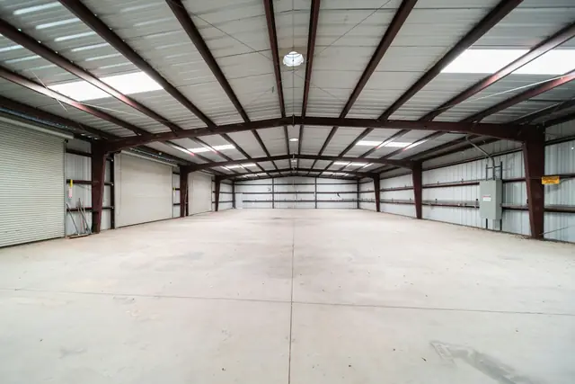
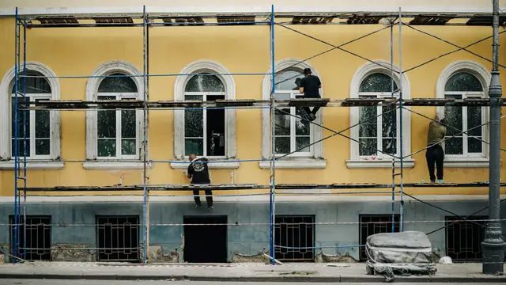
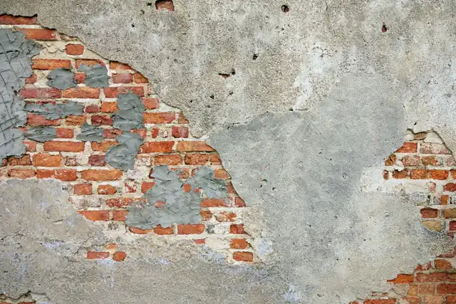
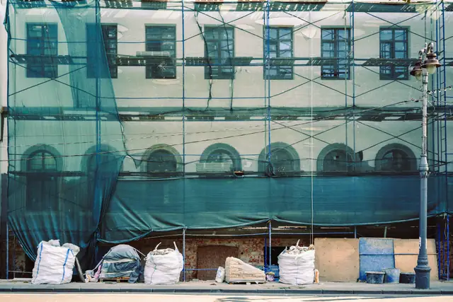
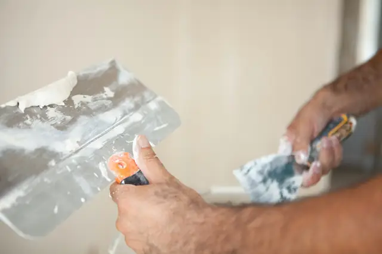
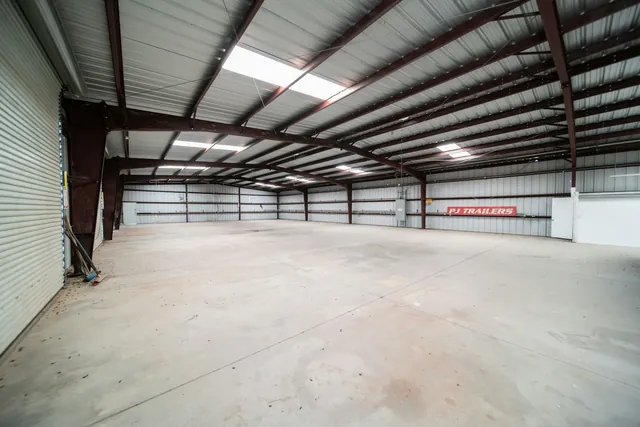

Impresa edile a Rocca Tessera: case, capannoni e facciate
Ristrutturiamo case, costruiamo e sistemiamo capannoni, rifacciamo facciate. Per famiglie e aziende di Rocca Tessera e dei paesi intorno, con il preventivo scritto prima di cominciare.
- Impresa
- Muraferma Costruzioni
- Lavori
- Ristrutturazioni, capannoni, murature, facciate, manutenzioni
- Zona
- Rocca Tessera e dintorni
- Telefono
- +39 000 000 0000
Cosa facciamo
Parti dal lavoro più simile al tuo.
-

Foto dimostrativa Casa e appartamento
Ristrutturazioni di case e appartamenti, intere o di una stanza sola. Murature, tramezzi, demolizioni e rifacimenti.
Scopri i lavori per la casa -

Foto dimostrativa Azienda e capannone
Capannoni nuovi, ampliamenti e strutture per aziende. Sistemiamo anche capannoni esistenti e locali commerciali.
Scopri i lavori per l'azienda -

Foto dimostrativa Facciate
Intonaci da rifare, tinteggiature, ripristino di cornici e balconi.
Scopri il rifacimento facciate -

Foto dimostrativa Manutenzioni
Piccoli lavori e interventi urgenti su case, condomini e capannoni.
Scopri le manutenzioni
Come lavoriamo
Quattro passi, dalla prima richiesta alla consegna.
Richiesta
Ci chiedi un preventivo dal modulo, per telefono o via email.
Sopralluogo
Vediamo il posto di persona, per capire cosa serve davvero.
Preventivo scritto
Le voci sono chiare, prima di iniziare.
Cantiere e consegna
Si lavora e, alla fine, si controlla insieme il risultato.
Lavori realizzati
Tre cantieri recenti
Cantieri di esempio: l'impresa è di fantasia e le foto sono dimostrative.
-

Foto dimostrativa Facciata di un condominio
Intonaco e tinteggiatura, sei settimane di ponteggio.
-

Foto dimostrativa Casa su due piani
Intonaci interni e tramezzi nuovi al piano terra.
-

Foto dimostrativa Magazzino in zona artigianale
Pavimento industriale e sistemazione della struttura.
Dove lavoriamo
Lavoriamo a Rocca Tessera e nei paesi intorno, fino a una trentina di chilometri. La sede e il magazzino sono in Via dei Muratori, appena fuori dal centro.
- Comuni serviti
- Rocca Tessera, il fondovalle e le colline vicine
Richiedi un preventivo
Tre campi e ti ricontattiamo per i dettagli.
- Telefono
- +39 000 000 0000
- Simulato in questa demo